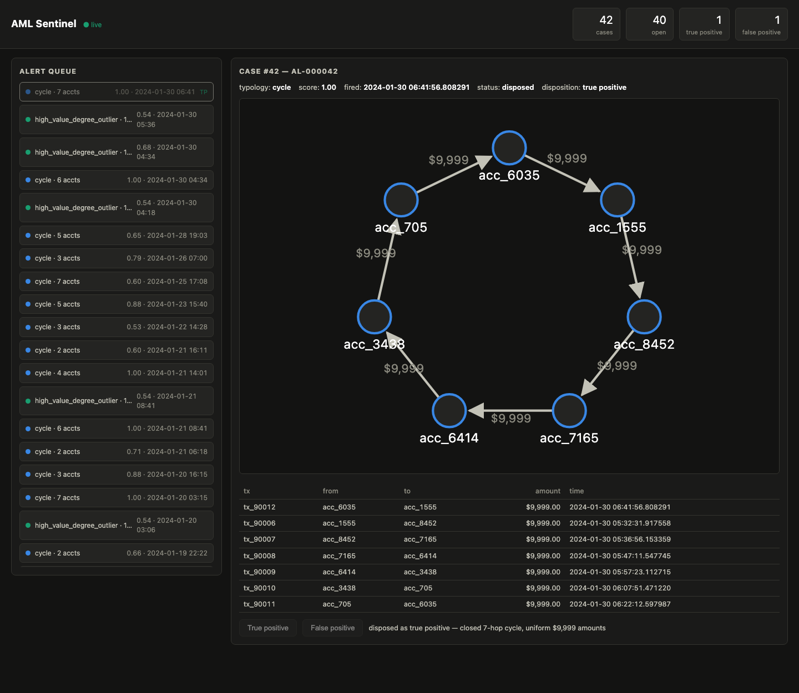
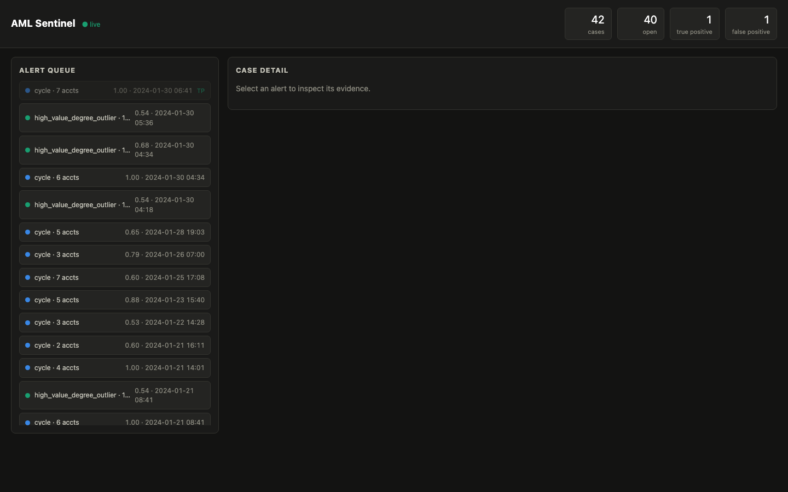

Catching A Laundering Ring The Moment It Closes
Somewhere between 2 and 5 percent of global GDP gets laundered every year by The United Nation's estimate, so take the error bars seriously, but even the low end is around a trillion dollars. The share that gets intercepted is usually quoted in single-digit percentages. Meanwhile banks collectively spend tens of billions a year on compliance and still eat fines like TD Bank's $3B in 2024 for monitoring failures.
That gap bugged me enough that I spent a few weeks building a transaction monitor from scratch: a system that watches a stream of payments, keeps a rolling graph of who paid whom, and raises an alert with attached evidence the instant a laundering pattern completes. Then it grades its own homework against ground-truth labels, which is something production AML systems fundamentally cannot do. This post is about how it works, what the numbers came out to, and where it's honestly still a side project.
What banks actually run today
If you've never worked near one, the surprising thing about bank AML monitoring is how much of it is batch. The core pattern, mostly unchanged for twenty years: extract the day's transactions overnight, run a few hundred "scenarios" over them (vendor platforms like NICE Actimize, Oracle's Mantas lineage, or SAS dominate here), and drop the hits into an alert queue that human analysts work through the next day. A first-line analyst triages, a second line investigates, and a small fraction of alerts end up as Suspicious Activity Reports filed with the regulator.
Two numbers define the analyst experience. The false-positive rate on scenario alerts is commonly put above 90% — most of what the queue contains is noise that still legally has to be looked at. And the latency floor is a day, because the pipeline is nightly. A layering ring that moves money through five mule accounts in an afternoon is long done before the batch job even starts.
The industry knows this. Instant-payment rails (FedNow, SEPA Instant, PIX) are forcing screening decisions into the seconds range, and every vendor now sells a "real-time" tier. But the installed base — the thing most compliance teams actually operate — is batch scenarios plus a case-management tool, and the alert usually arrives as a scenario name and a score. The analyst then reconstructs what actually happened by querying three other systems.
What I wanted to test
The project, AML Sentinel, is my attempt at the version of this I'd want to operate:
Streaming. Detection runs per transaction against a rolling in-memory graph, so a cycle alert fires on the exact transaction that closes the loop.
Evidence first. An alert isn't a score; it's the subgraph that caused it. The analyst UI renders the actual accounts and hops so the disposition decision takes seconds instead of hours.
Scored. The data is synthetic (gen-fraud-graph, Santander's generator), which is a real limitation — but it means I have labels, so I can publish precision, recall, and detection latency instead of claiming the rules "work".
Stack-wise it's Python 3.12 and asyncio end to end: a replay engine that
turns the generated CSVs into a live stream (through Redpanda, or in-process
for dev), the detection service, a FastAPI case API backed by Postgres, and a
small no-build-step UI. One docker compose up runs the whole
thing.
The build, in the order it surprised me
The data lies about time. First real discovery: the
generator writes a constant timestamp on every row — literally every normal
transaction says 2024-01-01T10:00:00. Cycle detection over a
time window is meaningless without event times, so the replay engine
synthesizes them: normal traffic spread uniformly over a simulated month,
each fraud ring given a random start with one-to-thirty-minute gaps between
hops, all from a seeded RNG so runs reproduce exactly. I kept a hard rule
here that ended up shaping the whole design: fraud labels never touch the
stream. The detector consumes transactions that look identical whether
they're injected fraud or noise; ground truth goes into a separate file only
the scorer reads.
The graph is the easy part if the stream is sorted. The
rolling graph holds 72 simulated hours of edges. Because the replay emits in
time order, eviction is embarrassingly cheap: the global expiry deque and
each account's adjacency deque are appended in the same order, so expiring an
edge is a couple of popleft()s — O(1), no scanning. The same
trick applies to the statistics: the graph maintains degree sum and
sum-of-squares incrementally, so "is this account's degree three standard
deviations above the population?" is an O(1) question, not a 100K-account
scan per transaction.
Three rules, three personalities. Cycle detection runs a bounded DFS from each new edge's destination back to its source (depth ≤ 7, with an expansion budget so a pathological hub can't stall the stream) and scores by amount uniformity — moving the same $9,999 around a loop is the classic layering signature. A structuring rule watches for repeated just-under-$10,000 transactions on one account inside 24 hours. And a statistical rule flags high-value transactions into accounts whose rolling degree is anomalous, which is deliberately not tuned to anything the generator injects.
Everything after detection is an analyst product. Alerts POST into a case API; the UI gets them pushed over a websocket, renders the evidence subgraph as plain SVG (a laundering cycle drawn on a circle is satisfyingly literal), and offers exactly two buttons: true positive, false positive. That two-button workflow is the actual job of an AML analyst, compressed.

Watching a month go by
The compose demo replays 30 simulated days of traffic in about a minute. Rather than embed a video of that, here's the real thing: the widget below replays the actual 42 alerts from a seed-42 run over the 90,055-transaction dataset, on the same compressed clock the demo uses.
Not a recording — these are the 42 alerts the detector actually fired on the seed-42 dataset, replayed at ~1 simulated day per second. Blue dots are cycle alerts, green are degree outliers.
Two things I like watching in this feed. Alerts cluster — rings are injected at random times, but the degree-outlier rule often fires mid-ring, a few minutes before the cycle rule confirms it, which is exactly the early-warning behavior you'd want from a statistical rule. And the 2-account and 3-account cycles scattered through the month are mostly not fraud: they're ordinary payment loops that random traffic forms naturally. Which brings us to the numbers.

The numbers
Everything below is seed 42, single process, on a laptop.
aml-sentinel score reproduces it.
| Scale | Transactions | Throughput | p50 / p99 per-tx |
|---|---|---|---|
| 0.001 (10K accounts) | 90,055 | ~195K tx/s | 4 µs / 17 µs |
| 0.01 (100K accounts) | 900,059 | ~138K tx/s | 5 µs / 23 µs |
| Typology (scale 0.001) | Precision | Recall | Median latency |
|---|---|---|---|
| cycle | 0.29 | 10/10 rings | 0s |
| degree outlier | 1.00 | 6/10 rings | −1,879s |
The row I find most instructive is the one that looks worst. Cycle detection catches every injected ring with zero latency, but 24 of its 34 alerts are false positives, and at 10× the traffic that precision drops from 0.29 to 0.24. Those false positives aren't bugs; they're genuine cycles that random commerce forms inside a 72-hour window. That is the actual shape of rules-based AML: the rule that never misses is the rule that buries your analysts. The degree-outlier rule is the mirror image — perfect precision, 60% recall, and negative median latency, meaning it flagged the mule account before the ring finished building. And the structuring rule never fired at all, because each ring account only touches two sub-threshold transactions and I refused to lower the threshold to flatter the generator. A rule tuned to synthetic artifacts would tell you nothing.
So is this better than what banks run?
In three specific ways, I'd argue yes. Detection is event-time streaming, so the latency floor is the transaction itself rather than tonight's batch window; with instant payments becoming default rails, that's the direction the industry has to move anyway. Alerts carry their evidence, so triage is a look-and-decide instead of a cross-system investigation. And the whole pipeline is measured — synthetic labels let me state recall, which no production deployment can even define for itself.
And in the ways that pay compliance teams' salaries, no. There's no entity resolution — a real launderer uses twelve accounts at four banks under three spellings of their name, and matching those is harder than any typology rule. There's no tuning governance or SAR workflow or regulator. The state lives in one process's memory. And above all, the data is synthetic and easy: the injected fraud uses a fixed amount and distinctive descriptions, so perfect recall here says little about recall on real traffic (the separability problem is tracked upstream as gen-fraud-graph#27). The README's limitations section is titled "read this before being impressed" for a reason.
Where it goes from here
The three extensions I've designed but not built: swapping the in-memory graph for Neo4j behind the same five-method interface (durability in exchange for the microsecond latencies), contributing harder typologies and realistic amounts upstream so the precision numbers start meaning something, and horizontal scaling — the Kafka producer already keys by source account, so partition-per-detector is mostly wiring plus a second-stage join for boundary-crossing cycles.
The code, the metrics report, and the one-command demo are all in
the repository.
If you run make data && docker compose up, the month of traffic
you just watched above will happen again on your machine, live, in about a
minute.